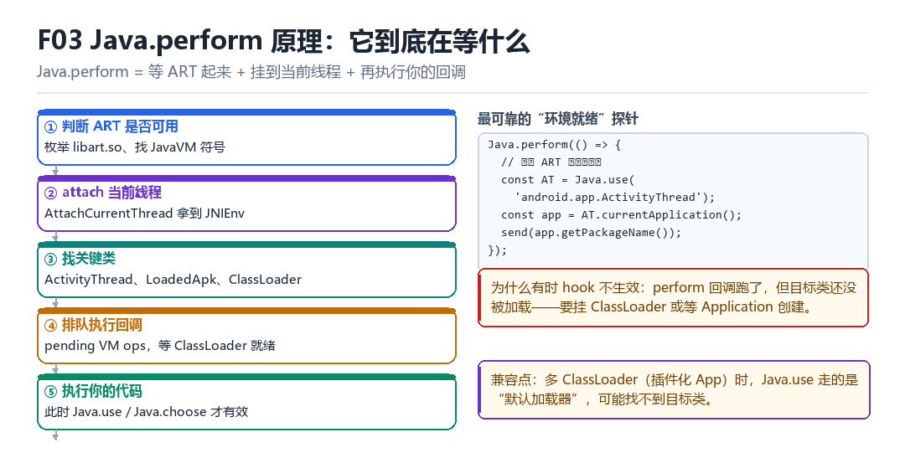

Frida Java.perform 原理
Java VM attach、ActivityThread、LoadedApk、ClassLoader、pending VM ops
Java.perform 做的不是“执行你的代码”，而是“等到能执行你的代码”。
3.1 五步流程

- 判断 ART 是否可用（枚举
libart.so、找JavaVM相关符号）。 AttachCurrentThread把当前线程挂到 JavaVM 上，拿到JNIEnv。- 找关键类：
ActivityThread、LoadedApk、ClassLoader。 - 把回调排进 pending VM ops，等 ClassLoader 就绪。
- 执行你的代码——此时
Java.use/Java.choose才有效。
3.2 为什么要在 perform 里用 Java.use
Java.use 需要一个“能解析类的环境”。如果 ART 还没起来，或者当前线程没 attach，它拿不到 JNIEnv，就会失败。perform 保证了这两个前提。
Java.perform(() => {
const AT = Java.use('android.app.ActivityThread');
const app = AT.currentApplication();
send(app ? app.getPackageName() : 'no-app-yet');
});3.3 三种“hook 不生效”的典型原因
| 现象 | 原因 | 对策 |
|---|---|---|
| perform 没进 | ART 未就绪 / 注入太早 | 等 Application 创建后再执行 |
| Java.use 报错找不到类 | 类还没被加载 | 挂 ClassLoader 的加载方法 |
| hook 挂上但没回调 | 调用的不是同一个 ClassLoader | 多 ClassLoader 逐个尝试 |
3.4 本章自测
- Java.perform 保证了哪两个前提？
- AttachCurrentThread 的作用是什么？
- 三种 hook 不生效的原因分别怎么排查？
- 多 ClassLoader 场景下，Java.use 为什么可能失败？
3.5 深入：pending VM ops 是什么
它是一张“待执行”的队列。Java.perform 的回调不是立刻执行，而是被放进这个队列，由 VM 在合适的时机（通常是线程 attach 后、且 ClassLoader 可用时）取出来执行。
console.log('A');
Java.perform(() => console.log('B'));
console.log('C');
# 输出顺序通常是 A C B —— B 被排队了3.6 实战：多 ClassLoader 的逐个尝试
Java.perform(() => {
Java.enumerateClassLoaders({
onMatch(loader) {
try {
const C = loader.loadClass('com.plugin.Target');
console.log('found in', loader);
} catch (e) {}
}, onComplete() {}
});
});3.7 原理推演：为什么“ART 就绪”是个模糊概念
“就绪”至少有三个层次：JavaVM 存在（能 attach）、ClassLoader 可用（能加载类）、目标类已加载（能 hook）。Java.perform 只保证前两个，第三个要你自己等。
| 层次 | Java.perform 保证 | 失败表现 |
|---|---|---|
| JavaVM 存在 | 是 | perform 不执行 |
| ClassLoader 可用 | 是 | Java.use 抛异常 |
| 目标类已加载 | 否 | hook 挂不上或挂错 |
所以“perform 里 hook 不生效”的最常见原因，不是 perform 有问题，而是“目标类还没加载”。
3.8 数据细节：三种等目标类的方法
// 1. 等时间（最差）
setTimeout(main, 3000);
// 2. 等 Application 创建（较好）
// hook ActivityThread.handleBindApplication
// 3. 等类加载（最好）
// hook ClassLoader.loadClass，命中目标名再动手3.9 深入：Java.perform 的“嵌套”问题
在 Java.perform 里再套一个 Java.perform 是合法的，但会多一层排队。更常见的问题是“在 hook 回调里调 Java.perform”——那是在目标线程上排队，可能导致死锁。
| 场景 | 是否安全 | 说明 |
|---|---|---|
| 顶层嵌套 perform | 安全 | 只是多一次排队 |
| hook 回调里 perform | 危险 | 可能在错误线程排队 |
| JS 线程里 perform | 安全 | 正常用法 |
判断方法：看当前代码跑在哪个线程上。如果是“目标线程”（hook 回调），就不要做重活，把数据 send 出去。
3.10 深入：`Java.choose` 为什么不推荐在启动时用
Java.choose 会遍历堆上的所有实例——这是一个非常重的操作，而且在启动早期堆还没稳定，可能崩溃或超时。
// 差：启动时全堆扫描
Java.choose('com.x.Target', { onMatch: i => {...}, onComplete: () => {} });
// 好：hook 构造函数，把实例存起来
const T = Java.use('com.x.Target');
T.$init.overload().implementation = function () {
const r = this.$init();
send('instance created');
return r;
};3.11 实战：一个可复用的“环境探针”脚本
Java.perform(() => {
const AT = Java.use('android.app.ActivityThread');
const app = AT.currentApplication();
send({
alive: true,
pkg: app ? app.getPackageName() : null,
loaders: Java.enumerateClassLoadersSync().length,
});
});现场：类明明在，为什么找不到
脚本一跑就抛 Error: java.lang.ClassNotFoundException: com.foo.Secret。可你翻 logcat，明明看到这个插件类在两百毫秒前被 dex 加载过；用 frida -U -n 晚一点附加上去，同样的 Java.use 又能成功。更邪门的一种是：不抛异常、不崩、hook 也“挂上了”，但回调永远不触发，日志里安静得像什么都没发生。
两种现象指向同一个误会：我们以为 Java.perform 是“执行我的代码”，其实它是“等到能执行我的代码”。它保证两件事——JavaVM 存在、当前线程能拿到 JNIEnv；第三件事“目标类已经被正确的 ClassLoader 加载”，它一概不管。而“找到同名但不同源的类”恰恰不报错，只会让 hook 落在一个永远不会被调用的副本上。
把一次 attach 拆成六拍
- agent 的 Java 运行时 → 对 libart.so → 枚举模块、定位 JNI_GetCreatedJavaVMs 与 JavaVM 实例 → 结果：拿到 VM 句柄；若 ART 还没起来，就把回调挂起，一个字节都不执行。
- agent → 对当前这条 JS 线程 → AttachCurrentThread 取得 JNIEnv 指针 → 结果：一条原本不属于 ART 的 native 线程被登记成 Java 线程，从此可以合法调 JNI；代价是它顺带带上了系统默认的 ClassLoader，而不是 App 的 PathClassLoader。
- agent → 对 VM → 通过 JNI 解析 ActivityThread 与 LoadedApk → 结果：拿到当前进程的 Application 上下文、包名，以及查找应用 ClassLoader 的入口。
- agent → 对 pending VM ops 队列 → 把你的 fn 追加进去并订阅就绪通知 → 结果：Java.perform 立即返回，调用栈回到顶层；此刻 fn 还没跑，这正是 F02 里
top先打印的原因。 - ART → 对 agent → 在 ClassLoader 可用（通常在 handleBindApplication 之后）时触发通知 → 结果：队列被 drain，你的回调在 JS 线程上执行，
Java.use终于有了可解析类的环境。 - 你的回调 → 对 Java.use → FindClass 解析类、生成 wrapper、改 ArtMethod 入口 → 结果：hook 生效；若目标类属于插件自己的加载器，这一拍解析到的是“另一份同名类”，不报错也不触发。
复现：把三个加载器摆到台面上
插件化 App 里最有效的排查动作不是加 setTimeout，而是先把所有 ClassLoader 枚举出来，再逐个试一遍。下面这段脚本会把“默认加载器能不能找到”和“哪个加载器里真的有”分别打出来；注意它会临时改 Java.classFactory.loader，验证完要记得改回去。
// loaders.js —— 先枚举，再逐个试
Java.perform(function () {
Java.enumerateClassLoaders({
onMatch: function (loader) {
Java.classFactory.loader = loader;
try {
const C = Java.use('com.foo.Secret');
send({via: String(loader), ok: true});
} catch (e) {
send({via: String(loader), ok: false, err: String(e)});
}
},
onComplete: function () { send({done: true}); }
});
});算成功：收到 done: true，且至少有一条 ok: true；把那条 via 记进笔记，后续脚本固定用 Java.classFactory.loader = <那个 loader> 再 Java.use。算失败：onMatch 一次都没触发，说明当前进程没有 ART，Java.* 整体不可用；onComplete 没来而所有项都 err，是注入太早、ART 尚未就绪，应该把动作挪到Application.onCreate 或 ClassLoader.loadClass 命中目标名之后；全部 ok: false 但类名拼写无误，就是类还没被任何加载器加载——这时候等时间没用，得等加载事件。
| 关键对象 | 谁提供 | 拿不到的后果 | 典型现场 |
|---|---|---|---|
| JavaVM 句柄 | libart.so 的导出符号 | perform 回调永不执行 | spawn 太早 |
| JNIEnv* | AttachCurrentThread | 任何 Java.* 调用直接崩 | 纯 native 线程 |
| ActivityThread | ART 堆中的单例 | 拿不到 Application 与包名 | 未 bindApplication |
| ClassLoader | LoadedApk / 插件框架 | Java.use 抛 ClassNotFoundException | 多加载器 |
| ArtMethod | 目标类被加载之后 | hook 挂在另一份同名类上 | 不报错也不触发 |
“先等 VM、再枚举加载器、最后才动 ArtMethod”这个顺序，在 LSPosed 部 L02 LSPlant Java Hook 原理 与 L04 模块 ClassLoader 与 DEX 生命周期 里会被原样复用：LSPlant 同样要先拿到正确的 ClassLoader 才能改 ArtMethod，L04 则把“模块 DEX 归哪个加载器管”做成了显式生命周期；KPM 部 M02 内核观察面与基础检测处理 观察 maps 时，也会把多出来的 DEX 映射当作 ClassLoader 数量的旁证，从 EL1 侧把这个结论再验一遍。